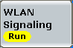

The individual connection states are controlled via the ON | OFF key, via hotkeys and via the DUT.
The available hotkeys depend on configured settings and the current connection state. All possible hotkeys are described in the following.
For background information, refer to "Connection Status".

To turn the signal transmission on or off, use the ON | OFF key or right-click the softkey. The current state is shown by the softkey. The signal transmission can be switched off any time, independent of the current connection state. A yellow hour glass symbol indicates that the signaling generator is turning on or off.
In many modes, turning on the signal transmission and the DUT is sufficient to initiate a connection between the tester and the DUT.
Remote command:This hotkey requests to establish an association to the AP under test.
- The operation mode equals "Station", see "Operation Mode".
- The connection mode equals "Manual", see "Connection Mode".
- The signaling state is ON and no association is established.
This hotkey is only visible in associated state. It requests the existing association to be terminated (disassociated and deauthenticated).
Remote command:This hotkey requests to re-establish the existing association. It has the same effect as a disconnect, followed immediately by a connect.
- The operation mode equals "Station", see "Operation Mode".
- The connection mode equals "Manual", see "Connection Mode".
- An association is established.
This hotkey initiates the authentication procedure / the invitation of the DUT.
- The operation mode equals "AP" or "Wi-Fi Direct", see "Operation Mode".
- In operation mode "AP", WPS is enabled, see "WPS".
- In operation mode "Wi-Fi Direct", a manual authentication type is used, see "Authentication Type".
- The signaling state is ON and no association is established.